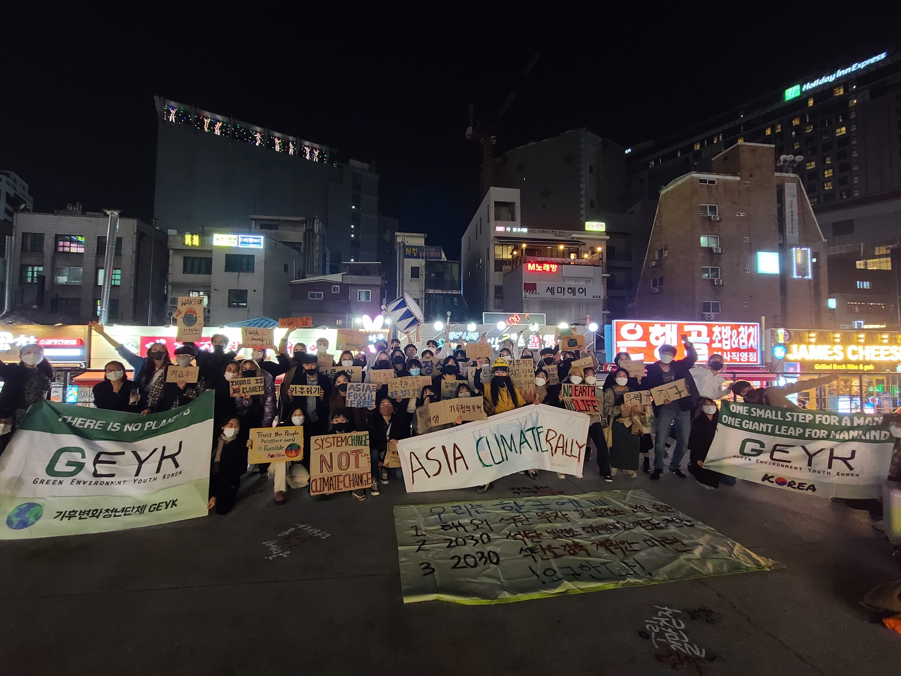

YOUTH IN ACTION, SINCE 2014SCROLL TO EXPLORE ↓
01 / ABOUT GEYK
기후위기 앞에서,
우리는 행동하는 청년입니다.
GEYK(긱)은 지속가능한 미래를 위해 청년이 주도하는 비영리 기후변화 단체입니다. 2014년부터 일상과 정책, 지역과 세계를 연결하는 기후행동을 이어가고 있습니다.
GEYK 더 알아보기 ↗2014청년 기후행동의 시작
Local to Global일상에서 국제 기후협상까지
Together함께 배우고 만드는 변화
02 / WHAT WE DO
변화를 만드는 우리의 방식

03 / OUR FOOTPRINTS
함께 남긴 변화의 기록
활동 분야, 팀, 연도로 GEYK의 활동과 보도를 찾아보세요.
기존 GEYK 연혁에서 선별한 활동입니다. 전체 기록은 원문에서 확인할 수 있습니다.
GEYK 언론 보도·기고
전체 보기04 / GEYK NOW
GEYK의 새로운 소식
05 / JOIN OUR MOVEMENT
기후를 위한 마음이
행동이 되는 곳.
당신의 관심이 우리의 다음 변화를 만듭니다.
GEYK와 함께할 새로운 동료를 기다립니다.
접수 마감
LATEST RECRUITMENT / 2026GEYK 25기
신입 멤버 모집
서류 접수 2026.08.11 – 08.21
새 공고는 GEYK 공식 인스타그램 또는 페이스북에서 확인해 주세요!
공고 상세 보기 ↗GOOD TO KNOW
함께하기 전, 궁금한 것들
어떤 활동을 하나요?
COP 팀에서는 국제 기후협상을 함께 공부하고 청년의 목소리를 전할 행사를 기획해요. 기후정서 팀은 기후불안이 일상에 어떤 영향을 주는지 살펴보고, EMU레터 팀은 해외 기후 뉴스를 번역해 뉴스레터로 전해요. 도시농업 팀에서는 직접 텃밭을 가꾸고, 생물다양성 팀에서는 청년 포럼을 열어 자연을 지킬 방법을 함께 고민해요. 어떤 팀이 멤버를 모집하는지는 기수별 공고에서 확인해 주세요.
기후·환경 전공자만 지원할 수 있나요?
전공·직업과 관계없이 기후변화에 뜻이 있는 청년을 환영해요! 지원 자격의 세부 내용은 각 모집공고 원문을 확인해 주세요.
다음 모집은 언제인가요?
멤버 모집은 주로 2월과 8월에 진행되며, 공고는 GEYK 공식 인스타그램 @geykkorea에 가장 먼저 올라옵니다. 모집 시기는 GEYK 일정에 따라 달라질 수 있습니다.